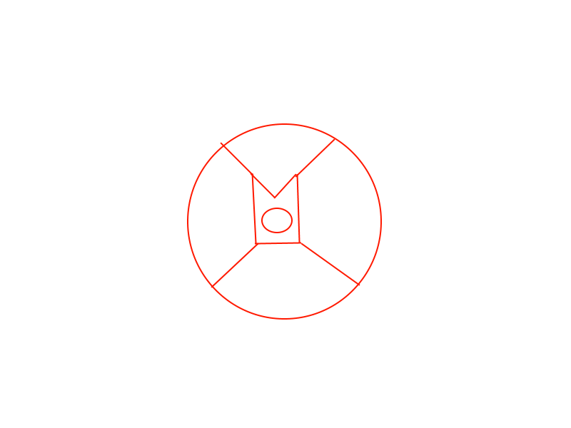

pour créer une couronne il faut géneralement un rituel spécifique qui sert a implorer le dieux de la créer, vous devez réaliser ce cerle et il faut poser l'oeil que vous souhaiter y introduire. ceci fait, vous aurez accès a une courone \"complétinf\"
créez en une autre en rajoutant dans le cercle sur la couronne un 3éme pique, comme avant mettez l'oeil au centre du cercle dans la couronne, celle ci deviendra une couronne \"complésup\"
toujours dans ce cercle, veuillez rajouter une branche et poser les deux couronnes, celle ci sera nommé couronne comblé interne
refaites la même chose avec deux couronne complésup pour donné une couronne comblé "alterne"
en les fusionnant ( en rajoutant une branch au cercle) vous aurez une couronne complete, mais en y rajoutant une couronne completinf qui sera appelé couronne asscendante, vous obtiendrez la couronne complête asscendé, mais en y rajoutant 3autres couronnes complete asscendé, une couronne complétinf et un oeil, elle fusionnerons et deviendrons une couronne ultimo.